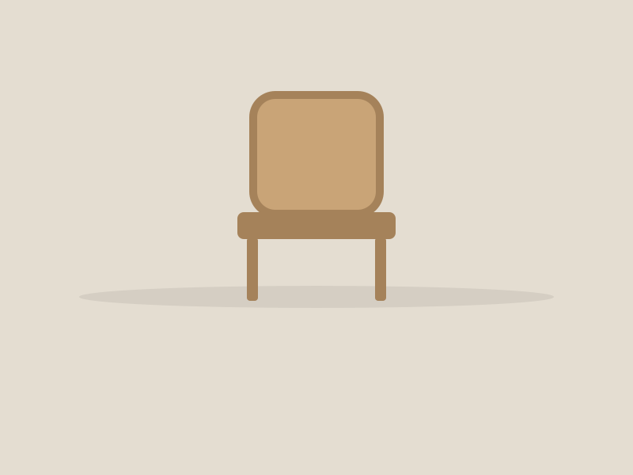

Chair
Tove Oak Dining Chair
€249.00
Item no. NH-2002
A sturdy dining chair in solid oak with a curved backrest. Sold individually.
Dimensions
- Width: 48 cm
- Depth: 52 cm
- Height: 80 cm
- Seat height: 46 cm
Material & Construction
- Solid oak, FSC certified
- Finish: natural matt lacquer
Features & Feel
- Firm wooden seat
- Smooth, natural wood grain
- Stackable up to 4 chairs